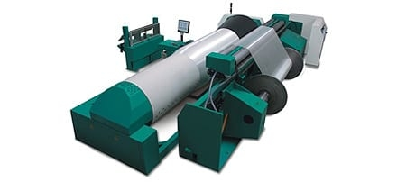

织布设备

卡尔迈耶分条整经机
KARL MAYER SECTIONAL WARPING MACHINE
卡尔迈耶分条整经机拥有最先进的工效学设计，保证了最高质量的织造工艺。 激光控制的卷绕成型系统保证了完全相同的纱线片段周长，整经大滚筒的运转无需纠偏停顿。以太网接口确保机器与客户的连接，以及相关数据采集的连接。 机器的应用十分广泛，可以配套各种纱架和纱线张力器，满足各种纱线的需求。
多尼尔剑杆织机-P1型
DONIER RAPIER WEAVING MACHINE
追随“用户定制化解决方案”的格言，多尼尔新型剑杆织机P1以其公认的坚固的机器构造、高强度的打纬力、独立马达控制的多达五轴的多经轴，能织造长丝织物和特别厚重的多层传送带织物。 采用全开口引纬系统，灵活地引入单丝、金属丝乃至极细的高档真丝纱线，已有超过35年的历史。积极式中央交接方式，意味着无与伦比的灵活性，而且操作简单，特别是在快速翻改品种时。可靠性生产和无疵点织造是决定性的重要因素。